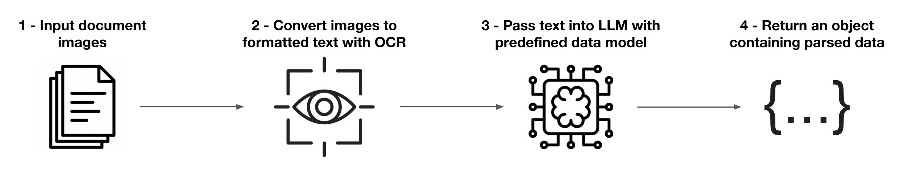

[](https://github.com/oronadavid/llm-document-parser/actions/workflows/docs.yaml/) [](https://github.com/oronadavid/llm-document-parser/actions/workflows/tests.yaml/) [](https://github.com/mozilla-ai/document-to-podcast/actions/workflows/lint.yaml/) [Blueprints Hub](https://developer-hub.mozilla.ai/) | [Documentation](https://mozilla-ai.github.io/llm-document-parser/) | [Getting Started](https://mozilla-ai.github.io/llm-document-parser/getting-started) | [Supported Models](https://mozilla-ai.github.io/llm-document-parser/customization/#supported-models) | [Contributing](CONTRIBUTING.md)
LLM Document Parser: A Blueprint for extracting sturctured data from documents
This Blueprint provides a locally runnable pipeline for parsing structured data from scanned or digital documents using open-source OCR and LLMs. It takes in one or more documents in image and/or PDF formats as input and returns a single structured object with fields parsed from the documents. By defining a prompt and data model, the Blueprint will know how what fields to parse and what they should look like.
The example use case, parsing transaction data from bank statements, demonstrates how you can pass in multiple documents with differing formats and extract shared fields (transaction amount, description, and date). All of the bank statments from every document are compiled into one object. This Blueprint can be customized to work with any type of document to fit your needs.

🚀 Quick Start
Setup
# Clone the repo
git clone https://github.com/your-username/llm-document-parser.git
cd llm-document-parser
# Create a virtual environment
python3 -m venv venv
source venv/bin/activate # On Windows, use venv\Scripts\activate
pip install -e .
# Edit the config with your desired settings and data model(s) using a code editor
vim src/config.py
Graphical Interface App
Command Line Interface
How it Works
1. Image Input
- Upload scanned digital document images or PDFs
2. OCR Model
- Input images are passed to an OCR model (Tesseract, EasyOCR, OCR Mac, RapidOCR).
- The OCR model outputs markdown-formatted text representing the document
3. LLM Inference
- Text is passed into an instructor-tuned LLM with a user-defined prompt and Pydantic data model
- The LLM parses and returns a structured JSON with the format specified by the data model
4. Export
- The output can be saved as
.jsonor converted to.csv
System requirements
- OS: Windows, macOS, or Linux
- Python 3.10 or higher
- Minimum RAM: 8 GB
- Disk space: 6 GB minimum
- GPU (optional): a GPU will enable the use of more powerful LLMs. 4GB+ of VRAM is recommended if using a GPU
License
This project is licensed under the Apache 2.0 License. See the LICENSE file for details.
Contributing
Contributions are welcome! To get started, you can check out the CONTRIBUTING.md file.